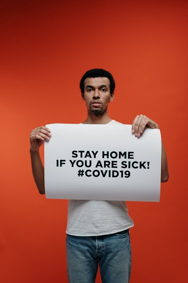

Our mission is to serve individuals at risk for COVID-19 and food insecurity, using technology to empower community organizations and local volunteers to deliver the essential supplies to those in need.
Lemme Help connects those who must shelter in place with our volunteers and delivery partners so
groceries, medication and essential supplies get delivered safely. Our technology platform makes

community volunteerism easy and reliable while providing an intuitive
solution for partners to scale their own impact.
Our partner solutions allow organizations to fulfill custom and batch
requests at scale through the Lemme Help platform, while we connect
individuals who need help and can offer help through our website.
Our partnerships with organizations like Wider Circle, Optum, Second
Harvest, Uber and others have allowed us to help bridge volunteer
shortages and solve the challenge of last mile delivery at scale. We've
grown the number of people we can help by working together—and we
are always open to new partners who want to contribute to our mission.
Founded by veterans of Uber, Facebook, and Google, as well as students beginning their careers, the
Lemme Help organization comprises more than 150 volunteers around the country who want to give
back. Together, we make local volunteerism easy and reliable for our partners and help to slow the
national spread of COVID-19.
If you are passionate about making a difference in people’s lives, we’d love to have you join our team of
dedicated volunteers!